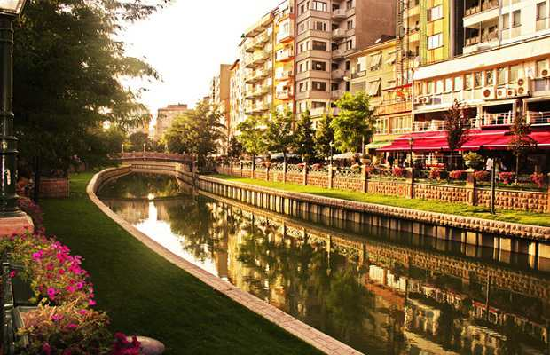

Eskişehir

Eskişehir (pronounced es-KEE-sheh-heer) is a city in the northwestern part of the Central Anatolia in Turkey. The city is home to about 500,000 people and two of Turkey’s biggest universities—Anadolu University and Eskişehir Osmangazi University—therefore the city is widely nicknamed as "students’ city" in Turkey. The name Eskişehir translates to "the old city" in Turkish, a fitting name as the city fully embraces modern life while still maintaining a sense of tradition and ancient values.
Like any other part of the Anatolian highland, the winters are cold and usually snowy. Temperature is regularly below the freezing point during this season, but it rarely drops below -15° C. Thanks to the low levels of relative humidity, the hot and dry summers are more comfortable than coastal regions of Turkey. Summer nights are cool, though, so be sure to bring at least a cardigan with you to wear outdoors. Spring and autumn are the wettest seasons, but with an annual rainfall amount of 415 mm (i.e., a semi-arid climate), you are unlikely to get much wet during your trip to Eskişehir, anyway.